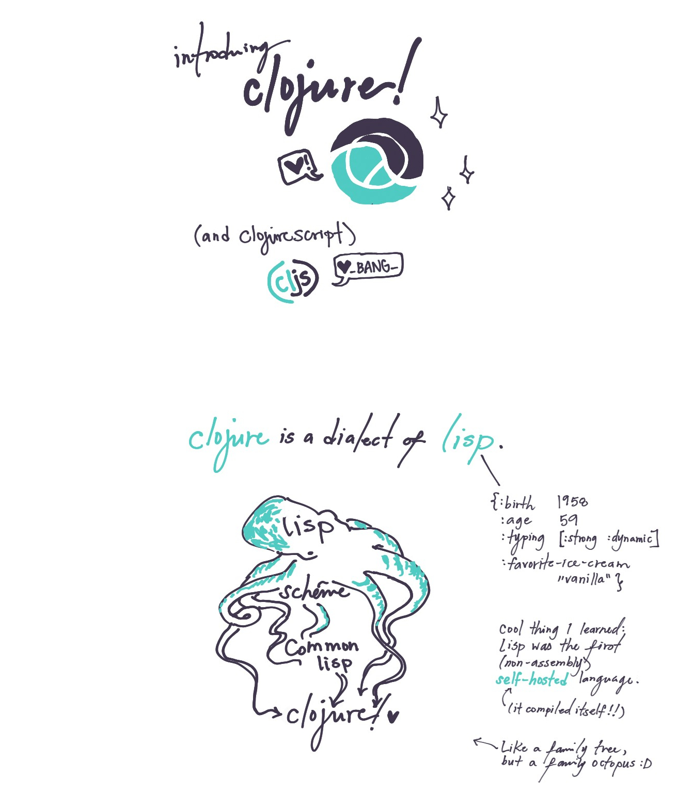
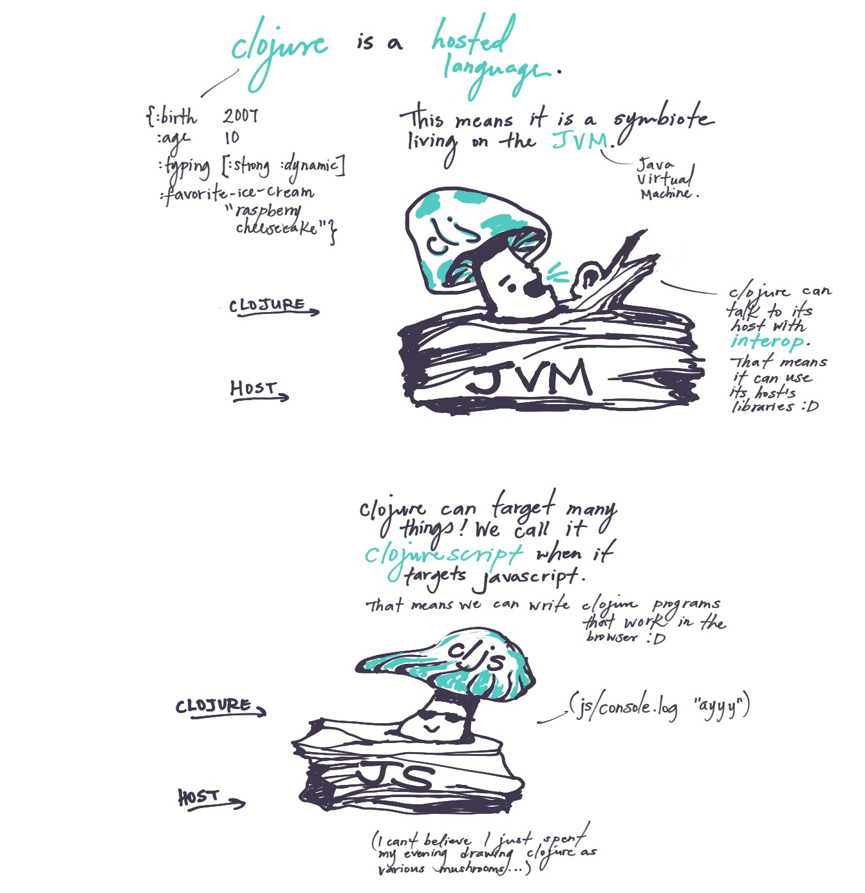
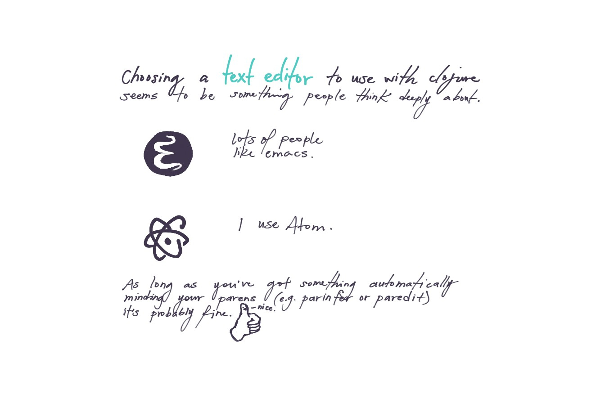
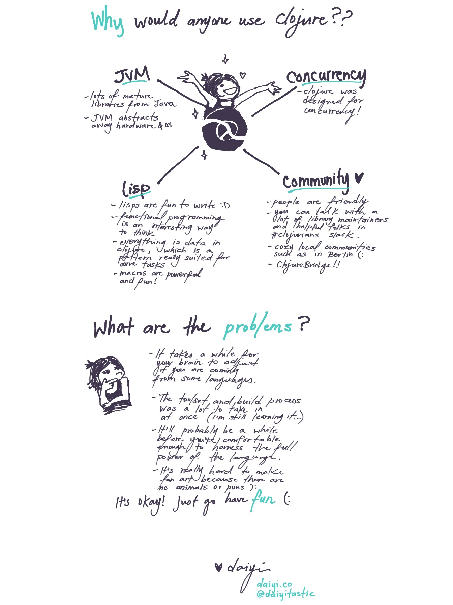

a smol comic about clojure




I made this cute comic because I’ve been writing a lot of clojure(/script) and people have been asking me about it so I’ve been introducing it a lot, and also holy crap a friend gifted me a graphics tablet over the weekend and I am finally reunited with digital art aaah :D :D :D
For those following along at home on shitty internet connections or screen readers or are struggling to parse my funky handwriting, I’ve transcribed the comic below!
>introducing clojure! (and clojurescript)
(clojure says ♥, and clojurescript says ♥_BANG_ because alas, it has gone through the transpiler).
>clojure is a dialect of lisp.
1 | { :name "lisp" |
Cool thing I learned: lisp was the first (non-assembly) self-hosted language (it compiled itself!!)
1 | { :name "clojure" |
(here I drew a lisp family tree, except the tree is an octopus)
>clojure is a hosted language.
This means it is a symbiote living on the JVM (Java Virtual Machine). Clojure can talk to its host with interop. That means it can use its host’s libraries :D
(here I drew clojure as a mushroom, also a symbiote, whispering sweet interops into the ear of the JVM).
Clojure can target many things! We call it clojurescript when it targets javascript. That means we can write clojure programs that work in the browser :D
(here I drew clojurescript also as a mushroom, lookin pretty chill on its host, javascript, console.log-ing, as one does.)
(I can’t believe I just spent my evening drawing clojure as various mushrooms…)
>choosing a text editor to use with clojure seems to be something people think deeply about.
Lots of people like emacs.
I use Atom.
As long as you’ve got something automatically minding your parens (e.g. parinfer or paredit) it’s probably fine. (here I drew a thumbs up, except the thumb is a face, and the face is saying “nice.”)
(extra note: if you decide to use emacs, don’t try to configure it from scratch like I did the first three times I tried to use emacs. go borrow someone else’s configuration!)
>why would anyone use clojure??
- JVM
- lots of mature libraries from java
- JVM abstracts away hardware & OS
- concurrency
- clojure was designed for concurrency!
- lisp
- lisps are fun to write :D
- functional programming is an interesting way to think
- everything is data in clojure, which is a pattern really suited for some tasks
- macros are powerful and fun!
- community ♥
- people are super friendly
- you can directly talk with a lot of library maintainers and helpful folks in #clojurians slack channel
- cozy local communities, such as in Berlin (:
- ClojureBridge!!
>what are the problems?
- it takes a while for your brain to adjust if you are coming from some languages.
- the toolset and build process was a lot to take in at once (I’m still learning it…)
- it’ll probably be a while before you’re comfortable enough to harness the full power of the language.
- it’s really hard to make fan art because there are no animals or puns ):
It’s okay! Just go have fun!
Also I’m super excited because Euroclojure is this week and it’s in Berlin! aaahh see you there?? (if you manage to find me and give me paper I’ll draw you hosting clojure as a mushroom, because I haven’t drawn enough mushrooms this week).